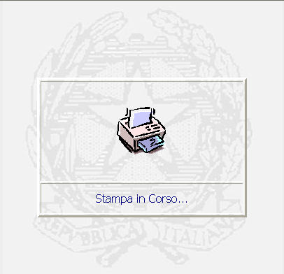
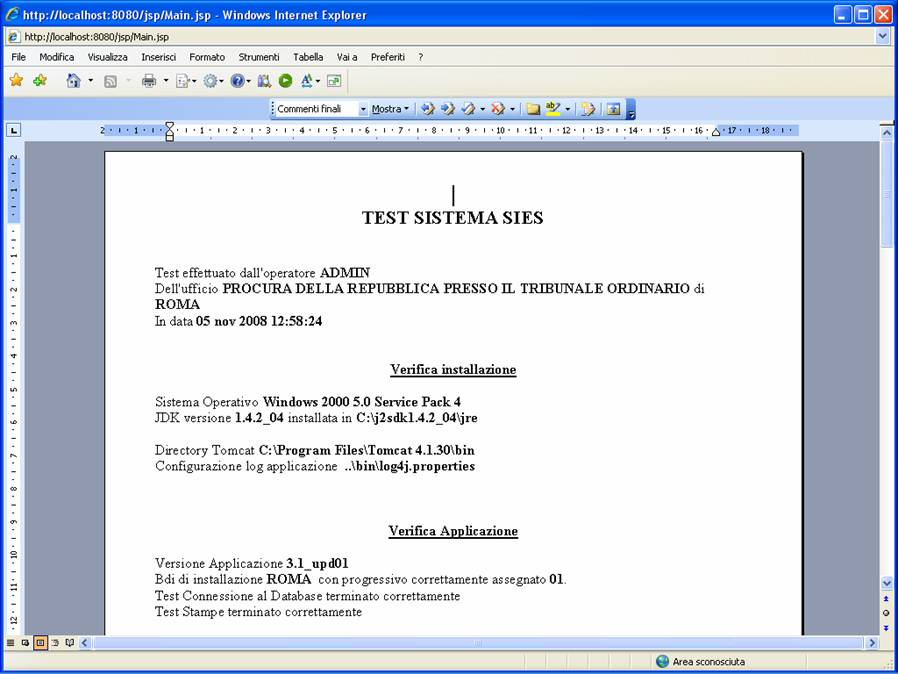
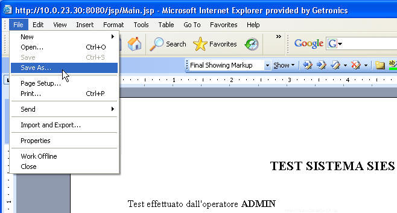
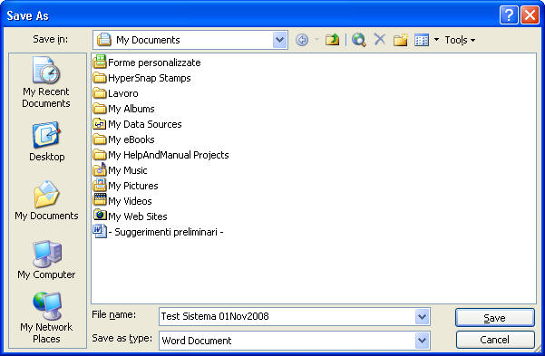
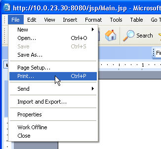
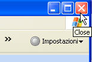

Per salvare il documento sulla postazione dell’utente ed apportarvi delle modifiche occorre, posizionandosi nella maschera che contiene il documento:
"Salvare con nome" il documento agendo sulla barra funzione di Internet come nella figura seguente:
TEST SISTEMA: La funzione, consente di generare il test dell'intero sistema SIES;
LE MASCHERE VIDEO
La funzione in esame viene realizzata senza la compilazione di alcuna maschera. Una volta richiesto il processo di test del sistema SIES, esso visualizza il seguente messaggio

ed a seguire viene visualizzata la maschera contenete sia il documento contenente le informazioni del test che tutte le funzionalità di gestione dell'editor tramite l'applicazione Microsoft Word ;

COME FARE PER ...
|
Per salvare il documento sulla postazione dell’utente ed apportarvi delle modifiche occorre, posizionandosi nella maschera che contiene il documento:
|

scegliere la posizione (directory) dove collocare tale documento ed il nome da assegnare al file e cliccare su ;

|
Per stampare il documento, posizionandosi nella maschera che contiene il documento, agire sulla barra funzione di Internet come nella figura seguente: |

|
Per chiudere la maschera con la visualizzazione del documento cliccare su come nella figura seguente: |
